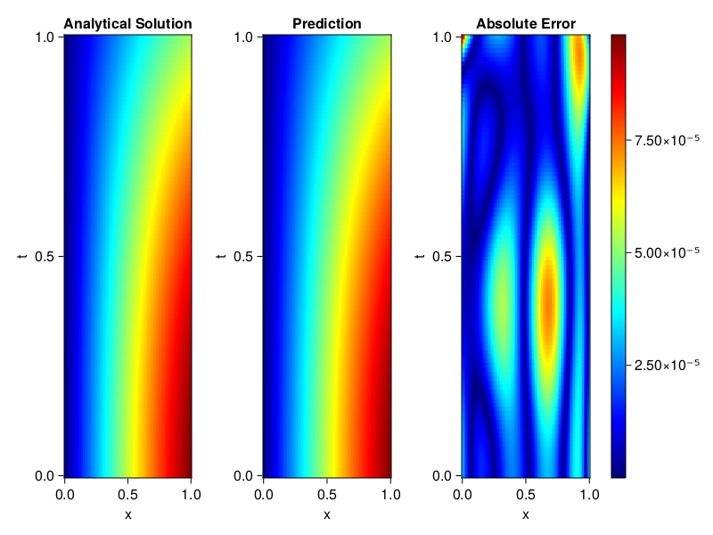
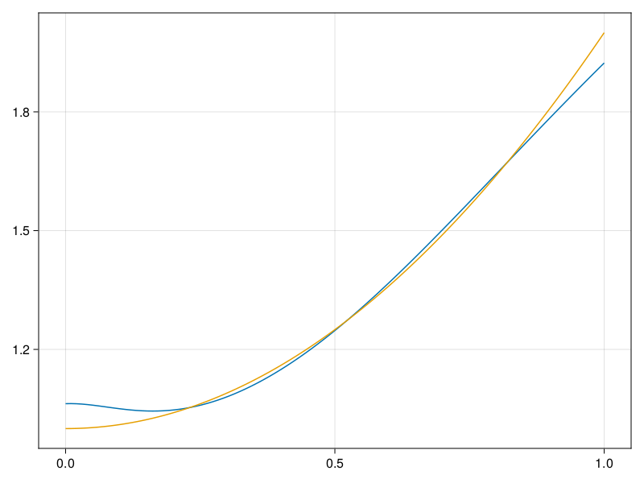

Inverse problem for the wave equation with unknown velocity field
We are going to sovle the wave equation.
using Sophon, ModelingToolkit, IntervalSets
using Optimization, OptimizationOptimJL
@parameters x, t
@variables u(..), c(..)
Dₜ = Differential(t)
Dₜ² = Differential(t)^2
Dₓ² = Differential(x)^2
s(x,t) = abs2(x) * sin(x) * cos(t)
eq = Dₜ²(u(x,t)) ~ c(x) * Dₓ²(u(x,t)) + s(x,t)
bcs = [u(x, 0) ~ sin(x),
Dₜ(u(x, 0)) ~ 0,
u(0, t) ~ 0,
u(1, t) ~ sin(1) * cos(t)]
domains = [t ∈ Interval(0.0, 1.0),
x ∈ Interval(0.0, 1.0)]
@named wave = PDESystem(eq, bcs, domains, [t,x], [u(x,t),c(x)])\[ \begin{align} \frac{\mathrm{d}^{2}}{\mathrm{d}t^{2}} u\left( x, t \right) =& c\left( x \right) \frac{\mathrm{d}^{2}}{\mathrm{d}x^{2}} u\left( x, t \right) + \cos\left( t \right) \left|x\right|^{2} \sin\left( x \right) \end{align} \]
Here the velocity field $c(x)$ is unknown, we will approximate it with a neural network.
pinn = PINN(u = FullyConnected((2,16,16,16,1), sin),
c = FullyConnected((1,16,16,1), tanh))
sampler = QuasiRandomSampler(500,100)
strategy = NonAdaptiveTraining(1, (10,10,1,1))NonAdaptiveTraining{Int64, NTuple{4, Int64}}(1, (10, 10, 1, 1))Next we generate some data of $u(x,t)$. Here we place two sensors at $x=0.1$ and $x=0.5$.
ū(x,t) = sin(x) * cos(t)
x_data = hcat(fill(0.1, 1, 50), fill(0.5, 1, 50))
t_data = repeat(range(0.0, 1.0, length = 50),2)'
input_data = [x_data; t_data]
u_data = ū.(x_data, t_data)1×100 Matrix{Float64}:
0.0998334 0.0998126 0.0997503 0.0996464 … 0.275281 0.267213 0.259035Finally we construct the inverse problem and solve it.
additional_loss(phi, θ) = sum(abs2, phi.u(input_data, θ.u) .- u_data)
prob = Sophon.discretize(wave, pinn, sampler, strategy; additional_loss=additional_loss)
@time res = Optimization.solve(prob, BFGS(), maxiters=1000)u: ComponentVector{Float64}(u = (layer_1 = (weight = [-0.4813999682268592 0.18138608114494048; -0.5734955581797277 -0.9490162717108317; … ; -0.8975357160185886 -1.0062109514046635; -1.2954937740976031 0.30414089001491834], bias = [0.06972996766576718; -0.12435132338916079; … ; -0.14839810506435955; 0.09010205152989928;;]), layer_2 = (weight = [0.4570001127277984 -0.35146921765444816 … 0.5619307161447736 -0.3074656567112894; -0.39707122437798725 0.09297856872447059 … -0.04466385565508099 -0.17224351915092903; … ; 0.10466666609213071 0.4686007353446509 … -0.03208463815880537 -0.033960924175236995; -0.24439129224055245 0.42254603992774836 … 0.08094446027732573 -0.5159881468473854], bias = [0.0558356011690878; -0.015454790625043981; … ; -0.07941421409605044; -0.06904671892631904;;]), layer_3 = (weight = [-0.13012831211263776 0.3607276876435237 … -0.08882207015483795 -0.24703759655678126; -0.46077079731348985 0.051223651824064076 … 0.3893484450838213 -0.2544331599410104; … ; 0.4903229544970963 0.4549084086790075 … -0.5130100549623327 0.08222824236577672; -0.40952171129998094 -0.09177757404246786 … -0.12344169708536494 -0.3692152826655633], bias = [0.03248209284572743; -0.035170100359481184; … ; 0.04030622115385222; -0.008921250667877929;;]), layer_4 = (weight = [-0.22930013953218342 0.47744431726423486 … 0.12807617657816542 0.5328508838927005], bias = [-0.045820427185740975;;])), c = (layer_1 = (weight = [0.6459266891385534; 0.11671198215207607; … ; 2.2002161448261868; 0.8672903276540046;;], bias = [0.015141949498668794; 0.07506176990045256; … ; -0.07554281283366146; -0.0025072734458521824;;]), layer_2 = (weight = [-0.00032265750745459545 0.33613678387049034 … -0.09163028863357009 0.652262227407503; -0.5134003314979186 -0.43564581310276834 … 0.360893867705334 0.6635958560135811; … ; 0.5951496135950961 0.323922150562465 … -0.49830814344920177 -0.48085154472453234; -0.087311907394102 -0.7021265413836126 … 0.3764612843406848 -0.36316960028741635], bias = [0.006699835589424653; -0.0579855427325086; … ; 0.011810880390807046; -0.061514264146791696;;]), layer_3 = (weight = [-0.05582014599228467 -0.5791376354990564 … 0.3644052173389928 -0.4566896545387127], bias = [0.16324166911900112;;])))Let's visualize the predictted solution and inferred velocity
using CairoMakie
ts = range(0, 1; length=100)
xs = range(0, 1; length=100)
u_pred = [pinn.phi.u([x, t], res.u.u)[1] for x in xs, t in ts]
c_pred = [pinn.phi.c([x], res.u.c)[1] for x in xs]
u_true = [ū(x, t) for x in xs, t in ts]
c_true = 1 .+ abs2.(xs) |> vec
axis = (xlabel="x", ylabel="t", title="Analytical Solution")
fig, ax1, hm1 = heatmap(xs, ts, u_true, axis=axis; colormap=:jet)
ax2, hm2= heatmap(fig[1, end+1], xs, ts, u_pred, axis= merge(axis, (;title = "Prediction")); colormap=:jet)
ax3, hm3 = heatmap(fig[1, end+1], xs, ts, abs.(u_true .- u_pred), axis= merge(axis, (;title = "Absolute Error")); colormap=:jet)
Colorbar(fig[:, end+1], hm3)
fig
fig, ax = lines(xs, c_pred)
lines!(ax, xs, c_true)
fig